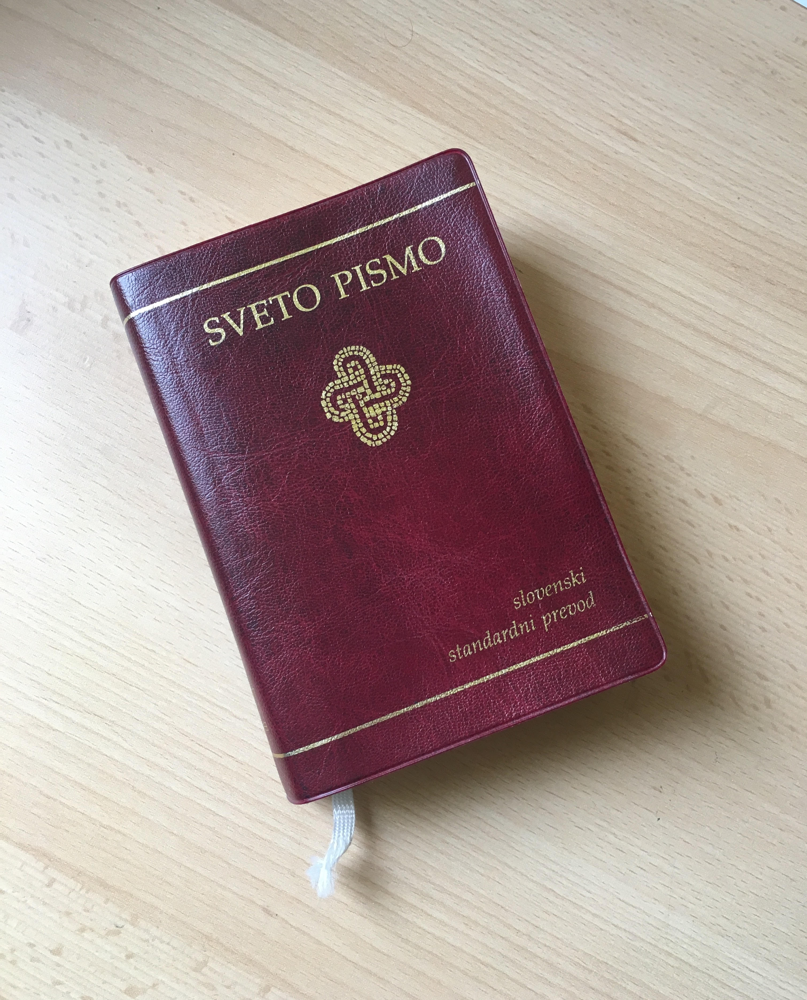

ODNOS RELIGIJE DO HOMOSEKSUALNOSTI
Homoseksualnost je označena kot zabloda in preizkušnja za osebo, njena najboljša rešitev pa je
samoobvladanje.
Homoseksualce je potrebno sprejemati s spoštovanjem, sočutjem in obzirnostjo, saj nosijo svoj križ.
Med glavnimi grehi je možno zaslediti napuh, lakomnost, nevoščljivost, jezo, nečistost, požrešnost, lenobo ali acidio
Homoseksualnost pomeni odnose med moškimi ali ženskami, ki čutijo izključno ali prevladujočo spolno privlačnost do oseb istega spola.
V različnih stoletjih in kulturah si nadeva zelo spreminjajoče se oblike. Psihični nastanek homoseksualnosti v veliki meri ni razložen.
Opirajoč se na Sveto pismo, ki dejanja homoseksualnosti prikazuje kot hude zablode, je izročilo vedno izjavljalo, da so homoseksualna
dejanja po notranje neurejena. Takšna dejanja nasprotujejo naravni postavi. Spolno dejanje namreč zapirajo darovanju življenja. Ta dejanja
ne izhajajo iz resnične afektivne in spolne komplementarnosti. V nobenem primeru jih ne moremo odobravati. Precej številni moški in ženske
imajo v sebi prirojena homoseksualna nagnjenja. Niso si sami izbrali svojega homoseksualnega stanja; za večino od njih pomeni to stanje preizkušnjo.
Sprejemati jih je treba s spoštovanjem, sočutjem in obzirnostjo.
